「VSG」とは？
「VSG」とは？
◎ 親睦会とVSG反省会を兼ねて2001年11月24日(土)、豊田市のレストラン・仏蘭西亭(日南町1-3)で開催。
当日はJA1、0エリアからの参加者も含め、31名が参加した。
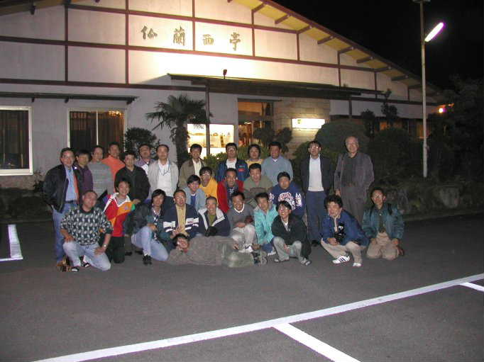
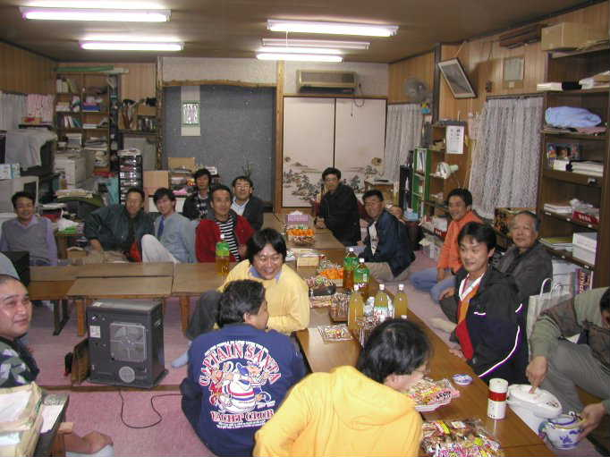
[JA1エリア]
◎ 1エリアの2001年懇親会は11月25日(日)、千葉県柏市で開催。
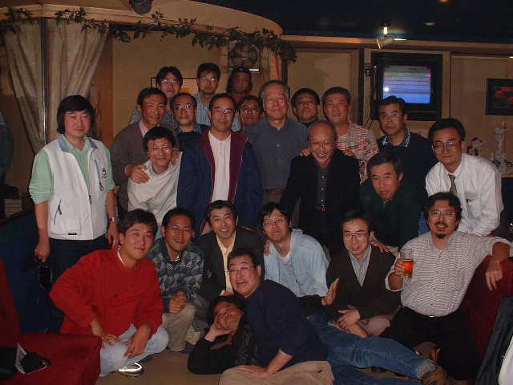
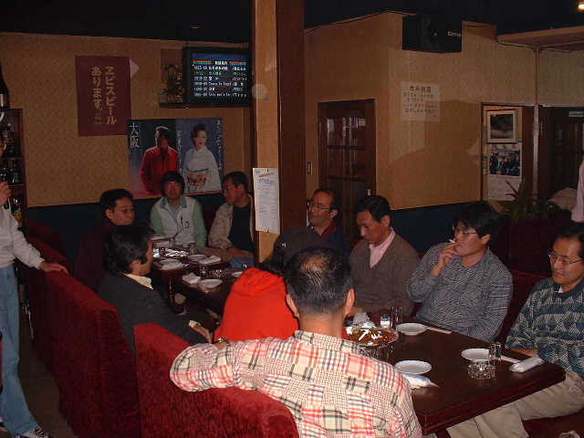
[JA7エリア]
◎ 7エリアの2001年忘年会は12月8日(土)、宮城県名取市のサッポロビール仙台ビール園(JR名取駅前)で開催。
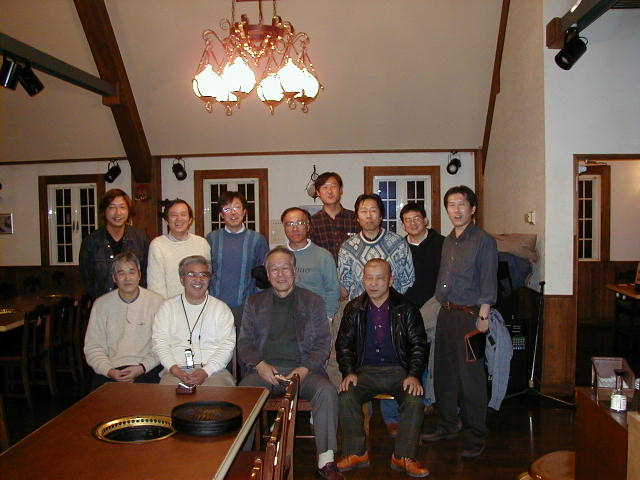
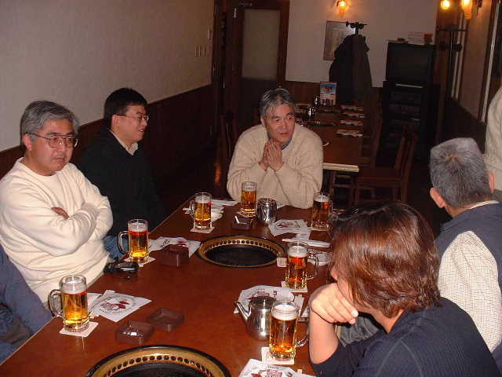
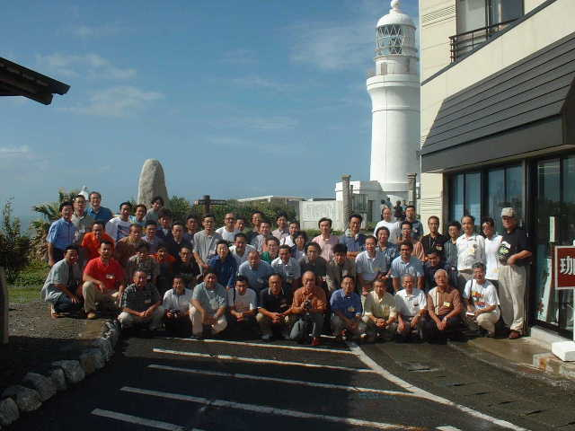
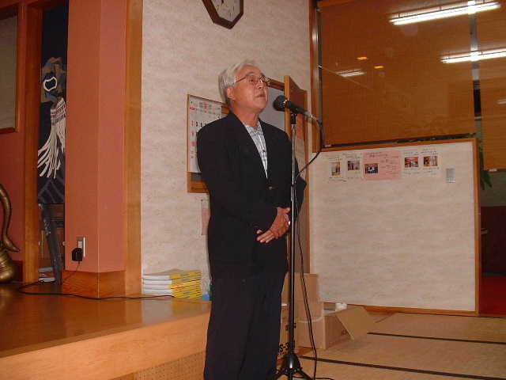
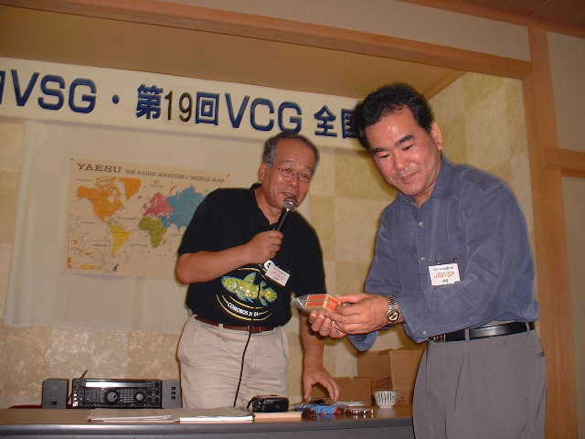
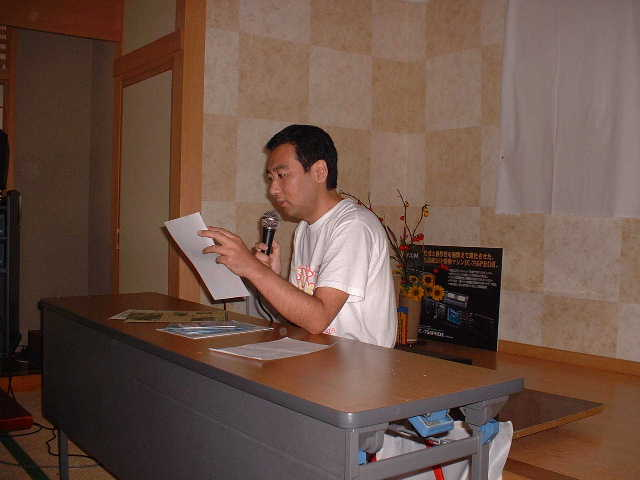
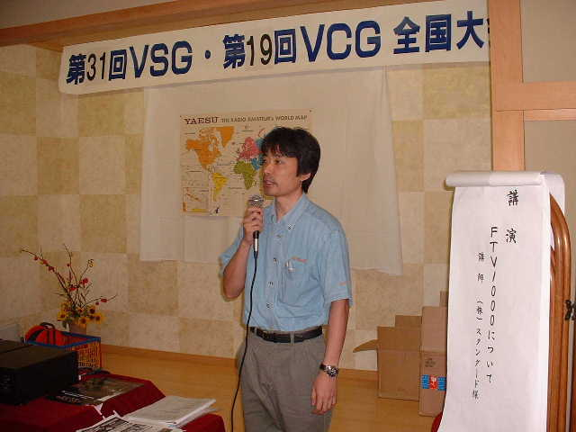
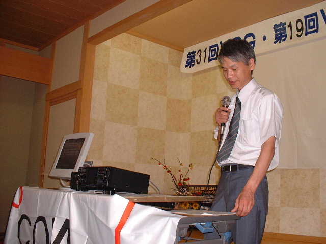
【 第31回VSG／第19回VCG全国大会参加者 】
JA1RJU JA2XW JG2BRI JA3MF JA4NUE JA5CMO JR6VSP JA7WSZ JA9LSZ
JA1VOK JA2BNV JG2TSL JA3JXJ JA4TOH JA5GJN JR6SVW JH7BRY JA9SSB
JI1DMH JA2BZY JH2COZ JA3QVQ JE4TRE JH7VEP
JL1ABP JA2EMQ JH2NZM JF3GPS JG4NDR
JL1BLW JA2IYH JI2CCF JG3IFX JL4GTO
JN1GTG JA2MNB JI2EVL JN3NFQ JR4FLW
JO1PSX JE2KCP JI2XIU JR3HED
JQ1QFO JE2PUC JJ2GAZ
JR1CRP JE2WLD JP2EKV
JE2XBY JR2HCB
JF2EEK JR2SQZ
JF2HEV JR2ULS
[9日参加]
JE1CUS JE2OVG JF2GWS
JJ1CKD JG2AJK JH2GZY
JN2WEK
「VSG」とは？

【 第30回東北6m SSB Group・宮城大会参加者 】
JA1DWQ JA5VBH JA7QPB JH7MQU JE7HMZ
JA1RJU(JA7JU) JA7AHK JA7QVI JH7MSB JE7JIS
JH1BLA JA7AIY JA7ROD JH7QLS JF7GDN
JR1LZK JA7BZU JA7WGB JH7UPW JI7NAI
JE1FWO JA7FEX JA7WSZ JH7VEP JI7WTK
JI1NJC JA7JWF JH7BRY JR7AIW JK7IKU
7L4KVO JA7KHQ JH7JGM JR7XGF JK7TKE
JA7MIT JH7LVH JE7CWH JL7MYQ
JA7OVC JH7OHF JE7EZN(JL1PND) JO7AJK
JA7QMH JH7LVH JE7GWN JO7CMO
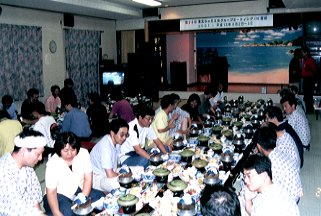
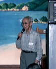
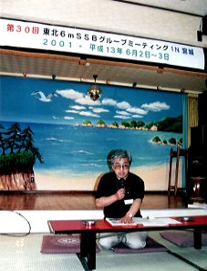
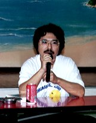
開催日: 2001年9月8日(土)前夜祭、9日(日)ミーティング
場 所: 静岡県榛原郡御前崎町32-19
御前崎観光ホテル ℡0548-63-2485
会 費: 17,000円（前夜祭参加、宿泊）
3,000円(ミーティングのみ)
ミーティングのみは当日で結構です。
申込先: 郵便振替
口座番号 00800-2-88081
口座名（加入者名） VSG全国大会
第1回締切日 2001年6月末日必着
第2回締切日 2001年8月10日(金)必着 (人数に余裕があれば)
※申し込み用紙に、(払込取扱票)
※口座番号 加入者名 通信欄に・コールサイン・とVSGへの一言。
※ご依頼人に、おところ おなまえ 電話番号を記入してください。
入金確認後、領収書・アンケート,パンフレット等を郵送します。
大会会長: JA2BNV 山形賢次
事 務 局: JR2HCB 水谷日吉
〒471-0067 愛知県豊田市栄生町3-60
℡0565-34-3184 Fax0565-31-9669 E-mail jr2hcb@hm.aitai.ne.jp
VSG・VCG全国大会スタッフ2エリア一同
口座番号、口座名の払込取扱票の印刷済みの物を希望者はE-mailでも結構ですので
請求してください。